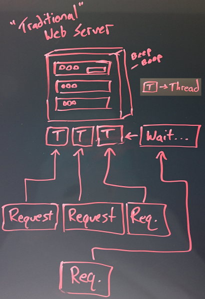
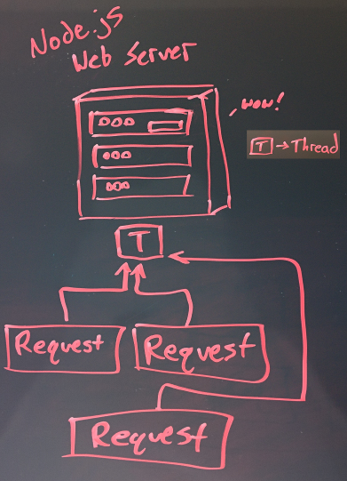

# Introduction to Node.js
#### Dylan Moore
### Intro
#### The What
* Node.js is an open source (MIT), cross-platform runtime environment for server-side and networking applications
### Intro
#### The Who
* developed by Ryan Dahl in 2009 aiming to create real-time websites with push capability
* Received standing ovation when presented at European JSConf in 2009
### Intro
#### The Why
* Node.js is for web applications with real-time, two-way communication
* NO applets/flash - uses open web stack (HTTP/JavaScript/Sockets/Etc.)
### High Scalability
* Node is not a silver bullet new platform that will dominate the web development world
* Node fills a particular need: building fast, scalable network applications, capable of handling a huge number of simultaneous connections
### What Are My PitFalls With Node?
* node is crummy for heavy computation, CPU-intensive operations
* using node for this will void most of its advantages
## Node.js
* event-drive architecture and non-blocking IO API
* node.js uses Google V8 JavaScript engine to execute code
* JavaScript is a well-known language - accessible to many developers
* Node.js combined with a browser, a document DB (MongoDB, CouchDB) and JSON offers a unified JavaScript development stack
## Google V8
* V8 is open source (BSD license)
* V8 is fast
* compiles js to native machine code prior to execution
* compiled code is additionally re/optimized dynamically at runtime based on heuristics of the code's execution profile
* V8 is focused on the web - proficient with internet fundamentals such as HTTP, DNS, TCP
How It Works - Traditional Web Server

How It Works - Node Web Server

### How It Works
* **node web server** - all requests handled by a single thread -- much higher scalability as you are no longer tied to thread overhead/RAM
* **upside** - highly concurrent applications
* 1M concurrent connections on 16GB server -- http://blog.caustik.com/2012/08/19/node-js-w1m-concurrent-connections/
* **downside** - node.js doesn't allow scaling with number of CPU cores w/o using additional modules such as cluster, StrongLoop Process Manager, pm2
### Package Management
* **npm** - package manager for node.js server platform
* used to install programs from npm registry
* helps developers build faster by organizing installation and management (similar to maven/apt-get/etc.)
* similar to ruby gems
### Popular Packages I
* **underscore** - provides utility functions - "JavaScript's functional programming helper library"
* most depended upon package in Node.js JavaScript runtime
* **express** - web development framework and the de-facto standard for the majority of Node.js applications out there today.
* **coffee-script** - "Unfancy JavaScript"
* CoffeeScript compiler that allows developers to write their Node.js programs using Coffee.
* **browserify** - bundle your dependencies into a single js file that can be included with a script tag
### Popular Packages II
* **connect** - extensible HTTP server framework, providing a collection of high performance "plugins" known as middleware; serves as a base foundation for Express.
* **socket.io** and **sockjs** - Server-side component of the two most common websockets components out there today.
* **Jade** - One of the popular templating engines, inspired by HAML, a default in Express.js.
* **mongo** and **mongojs** - MongoDB wrappers to provide the API for MongoDB object databases
* **forever** - most common utility for ensuring that a given node script runs continuously
#### When Not to Use Node?
> "...blocking operations are the root of all evil—99% of Node misuses come as a direct consequence."
- Tomislav Capan, 2013
#### Less Good Node Use Cases
* **Server-Side Web Application with Relational Database**
* Additional Components Needed, Less Mature
* **Sequelize** - http://docs.sequelizejs.com/en/latest/
* **Object Relational Mapping** (node-orm2) - http://dresende.github.io/node-orm2/
* **Heavy Server-Side Computation and/or Processing**
* CPU-intense operations annuls Node throughput benefits
* But you could always throw heavy computations into a background process - RabbitMQ, ZeroMQ, etc.
#### Good Node Use Cases I
* **Chat/Messaging**
* Messages relatively small
* **API on top of an Object DB (MongoDB)**
* no data conversion
* Rails - convert from JSON to binary models, then expose back as JSON over HTTP
* **Queued Inputs**
* useful when the client doesn't need to confirm successful data write (eventual consistency)
* data queued through some type of cache or message queueing (RabbitMQ, ZeroMQ)
#### Good Node Use Cases II
* **Data Streaming**
* HTTP requests/responses are streams, not isolated events
* Process files while they are still uploading
* Real-time audio or video encoding
* **Application Monitoring Dashboard**
* Gather real-time stats from your user
* Even reacting to user events realtime
* **System Monitoring Dashboard**
* Check infrastructure services asynchronously and push data to web clients
### DEMO - Node.js Code Basics Overview
* ✓
Create Server (DigitalOcean Droplet)
* Create workspace and project directory
* Create `package.json`
* controls project dependencies and version info (`npm`)
* install and add packages to `package.json` via `npm`
* `npm install --save <package>@<version>`
* example: `npm install --save express@4.10.2`
* Create a 'main' type file -- `index.js`
* Create an HTML page to serve (frontend) -- `index.html`
*we could use a templating engine (Jade) here, but that is for another demo*
### DEMO PRE-REQS
##### Node.js Server-Side Code Overview
* **`require`** imports components
* example: `var app = require('express')();`
* **Callbacks!**
* example:
```
app.get('/', function(request, response) {
response.sendfile('index.html');
});
```
DEMO PRE-REQS
Node.js Client-Side Code Overview
<script src="https://cdn.socket.io/socket.io-1.2.0.js"></script>
<script src="https://code.jquery.com/jquery-1.11.1.js"></script>
<script>
var socket = io();
$('form').submit(function() {
// send the chat
socket.emit('chat message', $('#input-msg'.val()));
// clear the input field
$('input.msg').val('');
return false; // don't submit
});
</script>
#### Put Your Demo Shoes On
```
git clone https://github.com/youcaughtafish/lunch-intro-node-chat.git
```
#### References
* http://en.wikipedia.org/wiki/Node.js
* http://www.toptal.com/nodejs/why-the-hell-would-i-use-node-js
* http://code.tutsplus.com/tutorials/real-time-chat-with-nodejs-socket-io-and-expressjs--net-31708
* http://socket.io/get-started/chat/